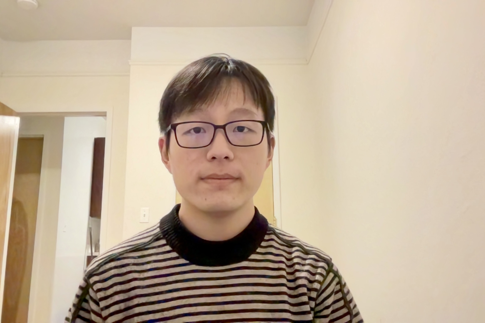

I am a master student at Columbia university. My major is Mechanical Engineering. I am also working at Creative Machine Lab. Currently, I am working on the AI Face project. Before this, I graduated from Huazhong University of Science and Technology.
Research interests: Robot learning, hardware, Machine learning
